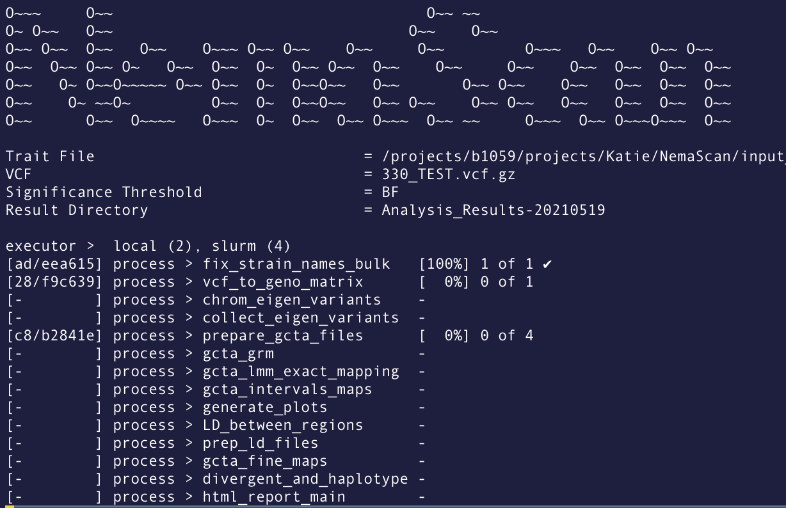

Nextflow¶
Nextflow is an awesome program that allows you to write a computational pipeline by making it simpler to put together many different tasks, maybe even using different programming languages. Nextflow makes parallelism easy and works with SLURM to schedule jobs so you don't have to! Nextflow also supports docker containers and conda enviornments to streamline reproducible pipelines and can be easily adapted to run on different systems - including Google Cloud! Not convinced? Check out this intro.
Installation¶
On Rockfish, you do not need to install Nextflow. Instead, you will be using a preinstalled version in a conda environment. To activate this environment, you will first load the conda module, followed by activating the Nextflow environment:
module load anaconda
conda activate /data/eande106/software/conda_envs/nf23_env
This will make Nextflow v23.10.1 available. To make it easier to load, you can create an alias for loading it by placing the following code in ~/.bash_profile:
alias nf="ml anaconda && conda activate /data/eande106/software/conda_envs/nf23_env"
To exit the Nextflow environment, simply use the command conda deactivate.
Important
Because this is a shared environment, you should not make changes to it by installing new software, updating Nextflow, etc.
Configuring Nextflow¶
There are a few environmental variables that will need to be set to insure proper function of Nextflow on Rockfish. You can set these by adding them to your ~/.bash_profile so that you only need to configure Nextflow once.
export NXF_CACHE_DIR=$HOME
export NXF_SINGULARITY_CACHEDIR=/vast/eande106/singularity
export NXF_SINGULARITY_LIBRARYDIR=/vast/eande106/singularity
export NXF_WORK=/scratch4/eande106/
Note
Once you have saved these changes to your profile, you will either need to close the terminal window and open a new one, or run the command source ~/.bash_profile in order for them to take effect.
Running Nextflow¶
Theoretically, running a Nextflow pipeline should be very straightforward (although with any developing pipelines there are always bugs to work out).
Running Nextflow with a remote pipeline¶
In order to run Andersen Lab pipelines, you should be retrieving them from their github repos directly through Nextflow to ensure that you are getting the newest (or specific) version. This can be done by specifying the repo instead of a .nf file. Nextflow will then include information about which version and repo the workflow came from in the logs and final report, allowing for complete reproducibility.
Note
Nextflow caches repos when you execute them. This means that if you run have previously run a workflow and go to run it again after changes have been made, Nextflow will reuse the cached version unless you specify to download the latest version with the argument -latest. If you need to run a specific branch, commit, or tag of a pipeline repo, you can do this with the argument -r <branch/commit/tag>.
# example command to run the latest version of NemaScan
nextflow run andersenlab/nemascan \
-latest \
--traitfile input_data/c_elegans/phenotypes/test_pheno.tsv \
--vcf 20210121
# Note: you can also write in one line, the \ were used to make the code more readable:
nextflow run -latest andersenlab/nemascan --traitfile input_data/c_elegans/phenotypes/test_pheno.tsv --vcf 20210121
Note
Parameters to Nextflow scripts are designated with the --. In the case above, there is a parameter called "traitfile" which we are setting to be the input_data/c_elegans/phenotypes/test_pheno.tsv file. Arguments to Nextflow are designated with the -. These tell Nextflow how to behave when running a pipeline and are specific to Nextflow, not any given pipeline.
When Nextflow is running, it will print to the console the name of each process in the pipeline as well as update on the progress of the script:

For example, in the above screenshot from a NemaScan run, there are 14 different processes in the pipeline. Notice that the fix_strain_names_bulk process has already completed! Meanwhile, the vcf_t_geno_matrix process is still running. You can also see that the prepare_gcta_files is actually run 4 times (in this case, because it is run once per 4 traits in my dataset).
Another important piece of information from this Nextflow run is the hash that designates the working directory of each process. the [ad/eea615] next to the fix_strain_names_bulk process indicates that the working directory is located at /scratch4/eande106/ad/eea615.... This can be helpful if you want to go into that directory to see what is actually happening or trouble shoot errors.
Note
I highly recommend adding this function to your ~/.bash_profile to easily access the Nexflow working directory: gw() {cd /scratch4/eande106/$1*} so that when you type gw 3f/6a21a5 (the hash Nextflow shows that indicates the specific working directory for a process) you will go to that folder automatically.
Resume¶
Another great thing about Nextflow is that it caches all the processes that completed successfully, so if you have an error at the middle or end of your pipeline, you can re-run the same Nextflow command with -resume and it will start where it finished last time!
nextflow run andersenlab/nemascan \
--traitfile input_data/c_elegans/phenotypes/test_pheno.tsv \
--vcf 20210121 \
-resume
There is usually no downside to adding -resume, so you can get into the habit of always adding it if you want.
Important
There is some confusion with how the -resume works and sometimes it doesn't work as expected. Check out this and this other guide for more help. One thing I've learned is there is a difference between process.cache = 'deep' vs. 'lenient'.
Running a custom Nextflow pipeline version¶
If you need to run a custom version of a pipeline, there are two approached you can use.
- Clone the repo onto Rockfish and make local changes. Then run Nextflow from the local pipeline.
- Clone the repo onto your computer, create a new branch, and make changes to your new branch. Then push those changes and run Nextflow on your branch of the pipeline.
You should NOT do the first, as this means that your analysis will not be reproducible the moment you delete that local repo, nor will it be available to other people. By creating your own branch, you are able to track changes and allow others to run the same code as you with only a couple simple extra steps.
On your machine (or technically Rockfish if you want, but I recommend locally) where
git clone https://github.com/AndersenLab/NemaScan.git
cd NemaScan
git checkout -b <your-branch>
## Make your local changes ##
git commit -a -m "This is my branch!" # or some more meaningful message
git push --set-upstream origin <your-branch>
To run your custom pipeline on Rockfish:
nextflow run andersenlab/nemascan -r <your-branch> ... # plus whatever arguments and parameters are needed for this pipeline
Getting an email or text when complete¶
If you would like to receive an email or text from Nextflow when your pipeline finishes (either successfully or with error), all you need to do is add -N <email> to your code. Most phone companies have a way to "email" your phone as an SMS, so you can use this email address to get a text alert. For example:
# send email
nextflow run andersenlab/nemascan --debug -N kathryn.evans@northwestern.edu
# send text to 801-867-5309 with verizon
nextflow run andersenlab/nemascan --debug -N 8018675309@vtext.com
Troubleshooting¶
Sometimes, Nextflow may throw an unexpected error that is unrelated to a problem with the data or commands inside the pipeline. If it can't be troubleshooted, one option is to clear the Nextflow cache. This will cause you to lose any progress and require Nextflow to start at the beginning of the pipeline.
rm -rf /home/<jheid>/.nextflow
Warning
You should always be careful when using rm, especially rm -rf. There is no going back. Make certain you want to delete the folder and everything inside it. In this case, it will be fine because nextflow will just clone it again fresh.
Writing Nextflow Pipelines¶
See this page for tips on how to get started with your own Nextflow pipeline.
Also check out the Nextflow documentation for help getting started!